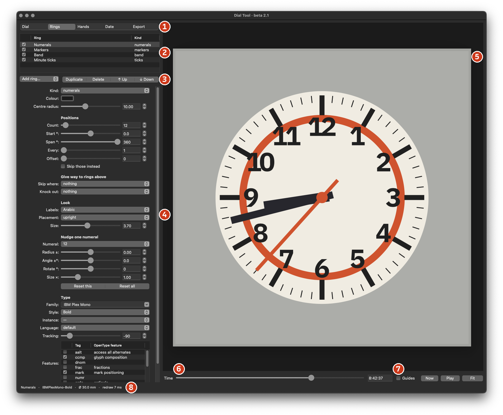

Guidebook
{{version}} · {{date}}
DrawBot · macOS
github.com/duztman/dial-tool
A watch dial is a few things repeated round a centre. Dial Tool draws it that way: a list of rings — ticks, markers, numerals, bands — plus hands and a date window, in millimetres, as clean vectors for print, etching and laser.
Every dial in this guide was drawn by the tool from the settings printed beside it. They are drawn by eye after well-known dial types — approximations, not measured copies. Rendered off-Mac with open fonts standing in for the macOS fonts named.
Install, run, and find your way round the window.
drawbot.com → Download.github.com/duztman/dial-tool → dial.py → download the raw file. Branch main is released; dev is the newest work.dial.py in DrawBot and press ⌘R. The window opens.skia-pathops → Go.
10:09:36. Now. Play.| Pinch | zoom about the cursor |
| ⌘ + scroll | zoom about the cursor |
| Two fingers | pan |
| Fit | the whole page again |
| Canvas · PDF | Canvas is fast and sharp. PDF is DrawBot's own viewer: the reference. They should match. |
Every number has a slider, a field and a stepper. In the field:
Typing past a slider's end extends the slider.
| Dial | diameter, page margin, plate and backdrop colour |
| Rings | the list, and the selected ring — p. 3–5 |
| Hands | hour, minute, seconds, cap — p. 6 |
| Date | the window — p. 6 |
| Export | files, settings, the log — p. 12 |
A ring repeats one thing round the centre, at its positions. The list order is the stacking order.
Change a ring's kind at any time: every ring carries every setting, so nothing is lost. Radius is the outer edge of ticks, markers and bands; for numerals it is the centre of the text.
| Count | how many positions |
| Start ° | where the first one sits (0 = 12 o'clock) |
| Span ° | 360 = all round, evenly. Less = an arc with both ends marked |
| Every | use every n-th position… |
| Offset | …counting from this one |
| Skip those instead | turn the choice round |
Add ring… puts a new ring above the selected one. Duplicate, Delete, ↑ Up, ↓ Down. The checkbox hides a ring without losing it. A new numerals ring copies the type of the one above.
Each ring has one flat colour. The plate and the backdrop are in the Dial section; hands, cap and date print have their own. The backdrop is for the preview only.
Ticks and markers share one set of shapes. Bands are colour. Rings give way to the rings above them.
| Length · Width | along the radius · across it |
| Inner width × | 0 triangle · 1 bar · > 1 wider inside |
| Round | true fillets, at either end |
| Hollow wall | an outline of that thickness |
Skip where drops this ring's positions where the chosen rings above already have a mark: minute ticks that stop for the hour markers.
Knock out cuts a gap of Clearance mm round the shapes above — markers, markers & numerals, or everything. The date window always clears every ring.
For bands, each position starts a segment and the segments tile the span. Fill % is how much of its step a segment covers. Railroad rails are two thin bands; a sector dial is pies.
One label per position. Each numerals ring has its own type.
Also Roman · IV. Numbers count from First number by Step, padded to Digits. Custom is your own list, comma-separated; an empty entry leaves that position empty.
On path sets each letter on the circle with the font's real spacing and one baseline; below 3 and 9 o'clock it flips to read left to right.
| Family · Style | any font installed on the Mac. No fonts folder. |
| Instance | a variable font's named instances |
| Variable axes | one slider per axis the font has |
| Features | OpenType features, with the designer's own names: tabular or oldstyle figures, stylistic sets, slashed zero… |
| Language | local forms, e.g. Turkish İ ı |
| Size · Tracking | mm · 1/1000 em, like Illustrator |
Pick a numeral, then correct it by eye. Stored per position; Reset this, Reset all.
| Radius ± | in or out, mm |
| Angle ±° | round the dial |
| Rotate ° | about its own centre |
| Size × | larger or smaller |
Typical: pull a wide 12 in by −0.2, or shrink 10 · 11 · 12 with Size × 0.92 so two-digit numerals weigh the same as the others.
Three hands, each with its own shape and settings. Lengths are millimetres from the pivot.
| Length · Width | from the pivot to the tip · at its widest |
| Tail | behind the pivot |
| Tip length | pencil, sword, arrow, syringe, Breguet |
| Head · ring · disc | arrow head or syringe barrel width; Breguet ring or lollipop disc Ø — and where it sits, in % of the length |
| Hollow wall | a lume opening |
| Counterweight Ø | a disc on the tail |
| File | your own drawing: Fit file to length, or Size ×; Width × stretches |
| sweep | smooth |
| quartz · 1/s | one step a second |
| 6 beats/s | 21,600 vph |
| 8 beats/s | 28,800 vph |
Play runs the hands from the set time; MP4 and GIF export record them. The cap over the pivot has its own diameter and colour.
| Position | 3 · 4:30 · 6 · 9 · 12 |
| Radius | the window's centre |
| Width · Height · Corner | the aperture |
| Frame | a printed border; 0 for none |
| Print clearance | every ring keeps this far from the hole |
| Shows · Text % | the day on the disc, and its size |
Markers and numerals leave the date's position empty. In a production mask the aperture is a cut line. The frame and the day share the Print colour.
Rings top first. Only what differs from a new ring is listed. The presets are in docs/guide/presets: Export → Load…
A double bar at 12, a framed date, a wordmark on a path; and almost nothing at all.
Numbers that count round an arc; hairlines and small numerals.
Two fonts in one circle of hours; a scale that isn't a clock.
Zones of colour — and short recipes to build on.
| Railroad track | Ticks, Count 60. Two thin bands: one at the ticks' Radius, one at Radius − tick Length + Band width. (California, p. 10: 14.2 and 13.32.) |
| Fifths of a second | Ticks Count 60 above ticks Count 300; the 300 Skip where: all marks above. |
| Cardinals only | Every 3. The other eight hours: Every 3 + Skip those instead. |
| Minute numerals 05–60 | Numerals, Labels Numbers, First number 5, Step 5, Digits 2, Start 30°. |
| 24-hour ring | Numerals, Labels Custom: 24, 13, 14, 15, 16, 17, 18, 19, 20, 21, 22, 23. (Field watch, p. 7.) |
| Wordmark | Numerals, Count 1, Start 180° (or 0°), Labels Custom, Placement on path. (Dress watch, p. 8.) |
| Two fonts, one ring of hours | Two numerals rings at the same Radius, each with a Custom list that leaves the other's positions empty. (California, p. 10.) |
| A gap round numerals | A band below the numerals; Knock out: markers & numerals above; Clearance 0.3. |
| Sector dial | A band, Count 12, Every 2, Band width = Radius: alternate pies. |
| Lume opening | Hollow wall on a marker or a hand: 0.15–0.25. |
What goes in, what comes out, and what to do when something looks wrong.
| vector, true size — Illustrator, print, the press | |
| SVG | vector, true size — Illustrator, laser, the web |
| PNG | at the dpi you set — film for toner transfer |
| MP4 · GIF | the hands moving — Clip seconds, Frames per s |
| Live text | numerals stay text in PDF and SVG. Off by default: outlines need no fonts and print as seen |
| Settings | Save… and Load… a .json of everything; Defaults starts over |
| Settings? | Saved as you work, in ~/Library/Application Support/DialTool/last.json. |
| Diameter? | Changing it moves nothing else: radii and lengths are mm from the centre. |
| A ring is gone? | Check its checkbox, Every and Offset, and what it skips. |
| Fonts? | Any font installed on the Mac. |
| Slow? | Install skia-pathops (p. 2). The log then says shape combining: skia-pathops. |
| Start over? | Export → Settings → Defaults. |
preview: canvas and all controls connected.tools/dial_probe.py and send its report.| Code · docs | github.com/duztman/dial-tool |
| Words | docs/glossary.md |
| Presets | docs/guide/presets/*.json |
| This guide | docs/guide/guide.html → tools/make_guide.py |